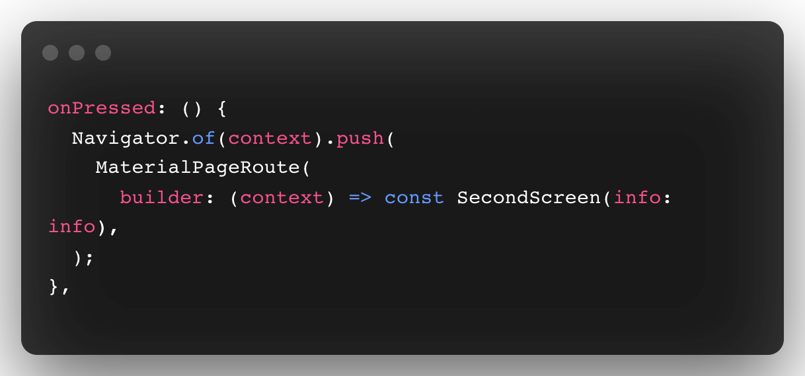
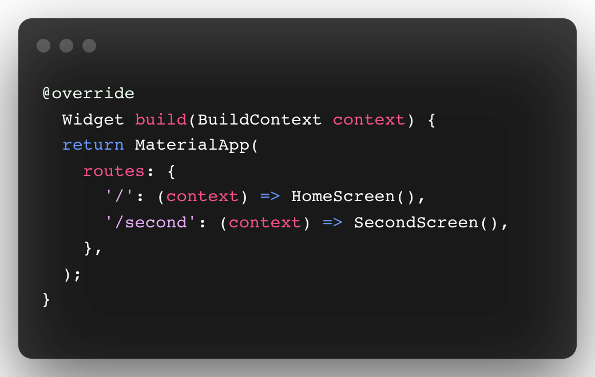
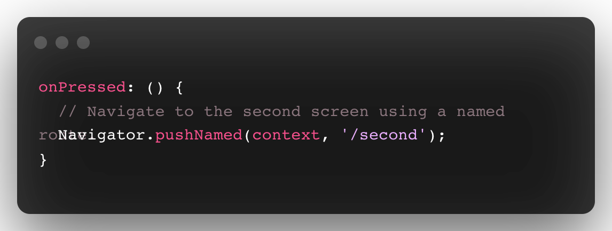
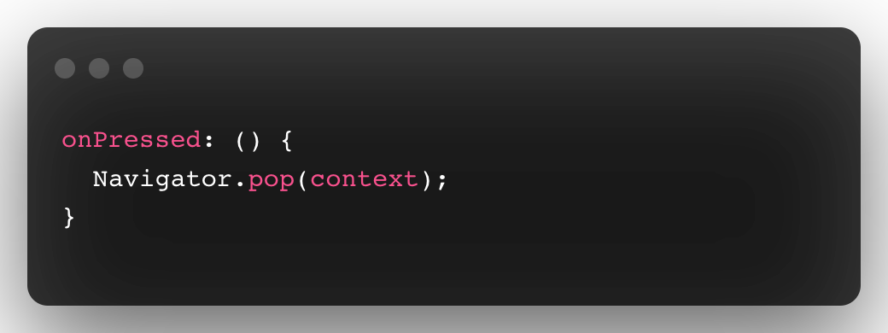

What is are Routes?
The apps display their content in a full-screen container called pages or screens. In flutter,
the pages or screens are called Routes.
Flutter provides a system for navigating from one screen to another. Small applications
without complex deep linking can use Navigator. The Navigator widget displays screen as a stack
using correct transition animations. To navigate to a new screen one has to access the Navigator
through the route’s BuildContext and call methods such as push() or pop().
Because Navigator keeps a stack of Route objects that means it represents the history of stack.
The push() method also takes a route object.
The MaterialPageRoute object is a subclass of route that specifies the transition animations for
material design.

Applications with simple navigation and simple deep linking requirements can use the Navigator
for navigation and the MaterialApp.routes parameter for deep links:

With the widgets and routes in place, trigger navigation by using the
Navigator.pushNamed() method. This tells Flutter to build the widget defined in the route
and launch the screen.

By using pop() method the top most route that is the current route is popped off the
navigator stack.

Limitations of using NamedRoute:
Although named routes can handle deep links, the behavior is always the same and can’t be
customized. When a new deep link is received by the platform, Flutter pushes a new route onto
the Navigator regardless where the user currently is.
And hence using named routes is not recommended in many applications although this method is
sufficient for your small applications having two or three screens.
For customizing navigation in your flutter app to achieve the most convenient navigation
throughout your app follow the steps given below: